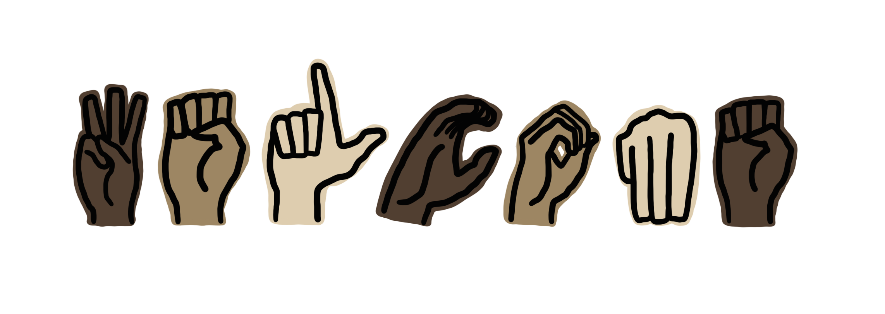

Welcome to Learn ASL, your guide to Learning American Sign Language!
American Sign Language (ASL) is a vibrant, expressive language used by millions worldwide, serving as a crucial tool for communication within the Deaf community. Whether you are learning ASL to connect with Deaf friends and family, improve accessibility, or simply explore a new language, Learn ASL provides an engaging and user-friendly platform to get started. Our goal is to make ASL education accessible to everyone, regardless of their prior experience.
To truly appreciate ASL, it’s important to understand its rich history. Our History page explores the origins and evolution of ASL, tracing its roots from French Sign Language (LSF) and Martha’s Vineyard Sign Language (MVSL) to its development as a fully recognized language in North America. By learning about ASL’s past, you’ll gain a deeper appreciation of its significance and impact on the Deaf community.
Once you’re familiar with ASL’s background, head over to our Basic ASL section to start learning! This page provides a foundational collection of the ASL alphabet and numerical system, making it easy to begin signing right away. With clear visuals and explanations, Learn ASL is designed to help you build confidence in your signing abilities and encourage meaningful communication.